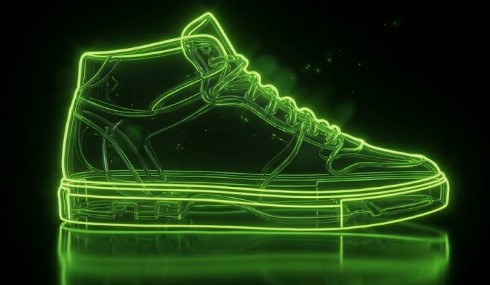
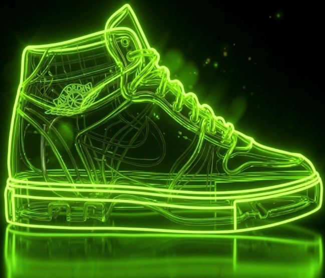

Corte bajo clásico diseñado para brindar máxima libertad de movimiento y
comodidad diaria. El complemento versátil e imprescindible para tu estilo
urbano.
#SiluetaLow
#CalzadoUrbano
#Streetwear
SILUETAS EN EL MERCADO
Low. Mid. High. Las siluetas que marcan el ritmo de la cultura urbana.
Silueta Low
@calzado_low

Silueta Mid
@calzado_mid
El equilibrio perfecto entre soporte y libertad. Nuestra silueta Mid ofrece
protección adicional al tobillo sin sacrificar agilidad, ideal para transiciones
fluidas en cualquier terreno.
#SiluetaMid
#SoporteHibrido
#VersatilidadUrbana

Silueta High
@calzado_high
Máxima cobertura y protección en un diseño de caña alta imponente. La silueta
High combina soporte superior con el impacto visual clásico de la cultura
sneaker.
#SiluetaHigh
#CanaAlta
#IconoUrbano
NUESTRO DROP
Edición limitada. Cuando se acaban, se acaban.

Nike Cortez
@nike_cortez
Un clásico de corte bajo y suela ligera, ideal para el uso diario.
Pocas unidades disponibles en este drop.
#NikeCortez #DropLimitado #Streetwear
#NikeCortez #DropLimitado #Streetwear

Air Force 1 Low
@airforce1_low
El ícono de la cultura sneaker en su versión low. Suela con cámara de aire,
cuero resistente y un diseño que combina con todo.
#AirForce1 #DropLimitado #Streetwear
#AirForce1 #DropLimitado #Streetwear

Nike Dunk Low
@nike_dunk_low
Nacida en las canchas y adoptada por el skate y la calle. Colores
audaces, perfil bajo y comodidad para todo el día.
#NikeDunk #DropLimitado #Streetwear
#NikeDunk #DropLimitado #Streetwear

Air Jordan 1 Mid
@jordan1_mid
Herencia de baloncesto en un corte medio. Soporte extra en el
tobillo
y el estilo inconfundible del Jumpman.
#JordanMid #DropLimitado #Streetwear
#JordanMid #DropLimitado #Streetwear

Nike Air Force 1 Mid
@nikeairforce1_mid
El clásico AF1 con caña media y correa en el tobillo. Más soporte,
la misma suela con cámara de aire y mucha presencia.
#AirForce1Mid #DropLimitado #Streetwear
#AirForce1Mid #DropLimitado #Streetwear

Nike SB Blazer Mid
@nike_sb_blazer_mid
Hecha para el skate y adoptada por la calle. Suela vulcanizada,
lengüeta acolchada y un agarre que aguanta el ritmo diario.
#NikeSB #DropLimitado #Streetwear
#NikeSB #DropLimitado #Streetwear

Air Jordan 1 Retro High
@jordan1_retro_high
La leyenda del baloncesto en caña alta. Siluetas originales,
colorways de colección y el Jumpman que todos quieren.
#JordanRetro #DropLimitado #Streetwear
#JordanRetro #DropLimitado #Streetwear

Nike Dunk High
@nike_dunk_high
Ícono de las canchas y el skate en caña alta. Soporte para el
tobillo, paneles contrastantes y colores que se notan.
#NikeDunkHigh #DropLimitado #Streetwear
#NikeDunkHigh #DropLimitado #Streetwear

Nike Air Force 1 High
@nike_air_force_1_high
Caña alta, correa en el tobillo y la silueta más imponente de la
línea AF1. Soporte total y presencia en cada paso.
#AirForce1High #DropLimitado #Streetwear
#AirForce1High #DropLimitado #Streetwear